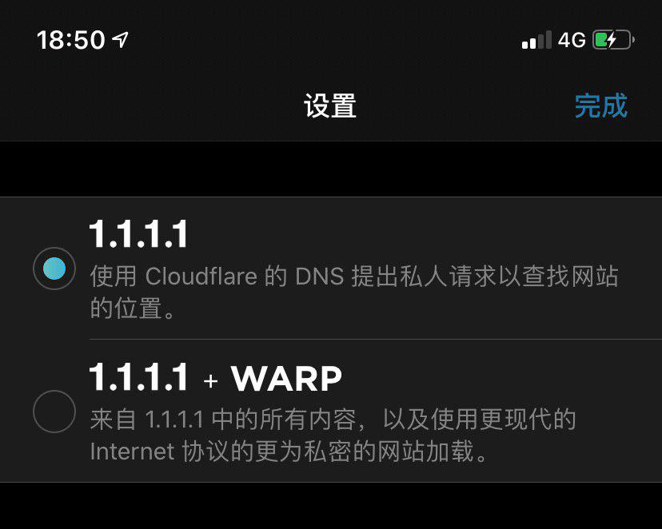

<?xml version="1.0" encoding="UTF-8"?>
<rss version="2.0"
xmlns:content="http://purl.org/rss/1.0/modules/content/"
xmlns:dc="http://purl.org/dc/elements/1.1/"
xmlns:slash="http://purl.org/rss/1.0/modules/slash/"
xmlns:atom="http://www.w3.org/2005/Atom"
xmlns:wfw="http://wellformedweb.org/CommentAPI/">
<channel>
<title>毒奶博主丨欢迎使用代理访问本站。 - DNS</title>
<link>https://limbopro.xyz/tag/DNS/</link>
<atom:link href="https://limbopro.xyz/feed/tag/DNS/" rel="self" type="application/rss+xml" />
<language>zh-CN</language>
<description></description>
<lastBuildDate>Fri, 28 Jun 2019 18:27:00 +0800</lastBuildDate>
<pubDate>Fri, 28 Jun 2019 18:27:00 +0800</pubDate>
<item>
<title>1.1.1.1（App） -Cloudflare DNS &amp;amp; 免费的 WARP+ VPN 以及一段代码刷 Cloudflare warp+ 无限（1TB）邀请流量</title>
<link>https://limbopro.xyz/archives/956.html</link>
<guid>https://limbopro.xyz/archives/956.html</guid>
<pubDate>Fri, 28 Jun 2019 18:27:00 +0800</pubDate>
<dc:creator>毒奶</dc:creator>
<description><![CDATA[如上图所示，在名叫 1.1.1.1 的APP 中，有两种模式可以选择，一种是 1.1.1.1，一种是 1.1.1.1 + WARP；]]></description>
<content:encoded xml:lang="zh-CN"><![CDATA[
<p></p><p>如上图所示，在名叫 1.1.1.1 的APP 中，有两种模式可以选择，一种是 <code>1.1.1.1</code>，一种是 <code>1.1.1.1 + WARP</code>；</p></img><p class="more"><a href="../../../archives/956.html" title="1.1.1.1（App） -Cloudflare DNS &amp; 免费的 WARP+ VPN 以及一段代码刷 Cloudflare warp+ 无限（1TB）邀请流量">[...]</a></p>
]]></content:encoded>
<slash:comments>0</slash:comments>
<comments>https://limbopro.xyz/archives/956.html#comments</comments>
<wfw:commentRss>https://limbopro.xyz/feed/archives/956.html</wfw:commentRss>
</item>
</channel>
</rss>